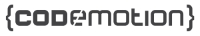
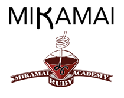
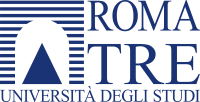
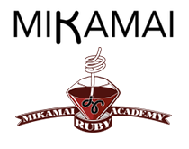
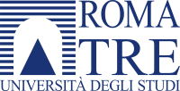
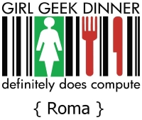
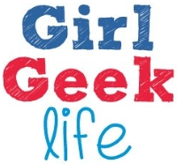
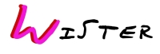
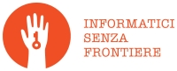

Ciao Roma! Rails Girls torna nella Città Eterna! Un evento dedicato alle ragazze che vogliono avvicinarsi al mondo della programmazione: questo lo scopo di Rails Girls.
Obiettivo del Rails Girls è quello di realizzare un piccolo progetto e condividere questa esperienza lavorando in team, seguiti da un mentore, in un clima estremamente informale e accogliente: non ci sono superstar ma solo ragazze che hanno voglia di mettersi in gioco.
Codemotion, una realtà da sempre particolarmente attenta al tema delle donne nella programmazione e sempre pronta ad aiutare le donne (di tutte le età) ad avvicinarsi al mondo della programmazione, porta nuovamente questo evento a Roma, prendendo esempio dall'ottima riuscita del primo Rails Girls organizzato dagli amici dell'Hub Roma nel 2013.
You learn designing, prototyping and coding with the help from our coaches.
You need your own laptop, curiosity and a sprinkle of imagination!
Want to help? We are looking for sponsors, speakers and volunteers!
Email us!
Applications close: September 10
Acceptances informed: September 17
Location: Dipartimento di Ingegneria - Università Roma TRE, Via Vito Volterra 62, 00146, Roma
| 16.00 |
RegistrazioneWhere: Dipartimento di Ingegneria - Università Roma TRE, Via Vito Volterra 62, 00146, Roma. |
|---|---|
| 16.15 |
Saluti e Welcome |
| 16.30 |
Setup e Installazione di "Ruby on Rails" |
| 8:30 |
Welcome e Introduzione dei lavoriWhere: Dipartimento di Ingegneria - Università Roma TRE, Via Vito Volterra 62, 00146, Roma. |
|---|---|
| 9:00 |
Workshop |
| 13:00 |
Break: Light Lunch |
| 14:00 |
Ripresa dei lavori |
| 18:00 |
Lighting talks |
| 19:00 |
Brindisi e networking afterparty |

 

Codemotion is an pan-european conference directed to a target of developers and is open


Codemotion is an pan-european conference directed to a target of developers and is open
to all programming languages.
GitHub is the world's largest shared code collaborative host.
Mikamai is a digital agency with a strong passion for Ruby and
Rails programming,
and organizes the
Ruby Academy.
Roma TRE Università
degli Studi is one of the
most appreciated
universities in Europe.




 Girl Geek Dinners Roma are dinners for girls in love with internet, technology and new media!
Girl Geek Dinners Roma are dinners for girls in love with internet, technology and new media!
Girl Geek Life is the magazine for girls passionate about technology.
Wister is the women network (Women for Intelligent and Smart TERritories) aimed to develop gender-neutral innovation politics.
Informatici Senza Frontiere is a non-profit association focusing its action on contexts of marginalization, both in Italy and in developing countries.
Roma Capitale - Assessorato Roma
Produttiva is the
Executive Office of the
City of Rome dedicated to
industrial and commercial
development.
Workshop participants will get a free copy of the ebook ‘Learn Ruby on Rails’ by Daniel Kehoe (PDF file for download).
"Learn Ruby on Rails" is the book for Rails beginners, offering a gentle introduction to important concepts.